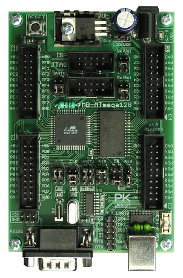
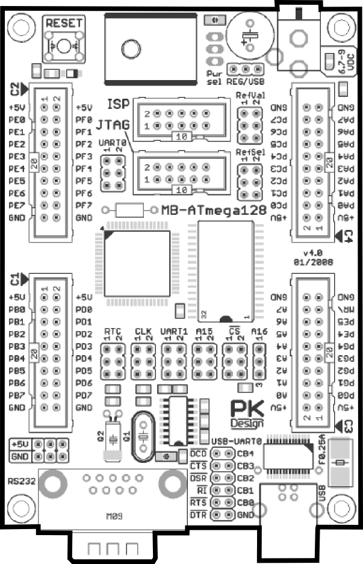
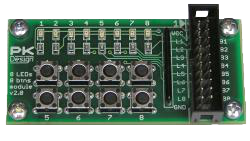
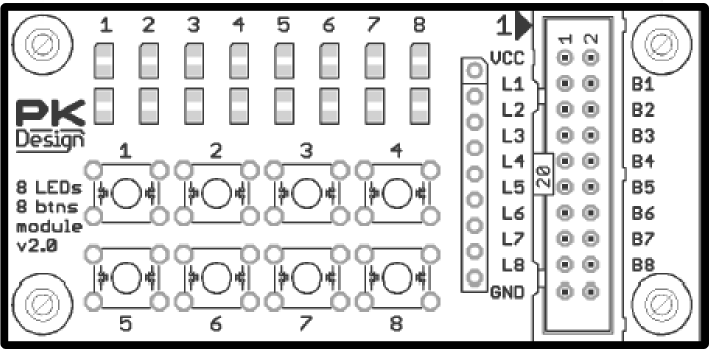
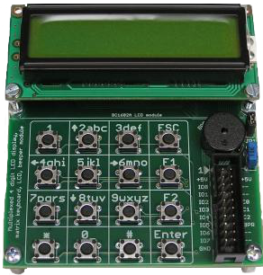
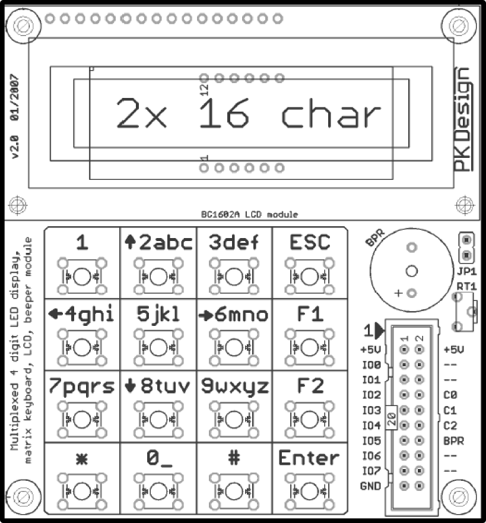

| Základní modul s procesorem MB-ATmega128 v4.0 | |
|  |  |
| Rozšiřující modul 8 LED diod a 8 tlačítek v2.0 | |
|  |  |
|
Rozšiřující modul LED a LCD displejů, maticové klávesnice a beeperu v2.0
|
|
|  |  |